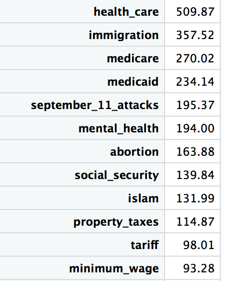

Our project goals were to analyze Google Trends data for the 2018 midterm elections. We chose to focus on Texas because of the close race between Beto O’Rourke and Ted Cruz. We wanted to identify the most highly searched political topics and examine different geographic components, such as where certain searches occurred. Our motivation is that this is a currently relevant issue in the U.S. and allows for analyses of civic engagement among American voters.
Over the course of the project, we realized that we only had Google Trends data from September to November 2018, which limited our ability to look at Trend data over time. Consequently, we restricted our analyses to this year’s data, specifically September 2018, and we did not compare 2018 data to that of previous years.
Using https://www.census.gov/mycd/, we found the top 5 most populated districts in Texas to be: Districts 22, 26, 3, 8, 31 We then filtered to include these five districts in our analyses
Using https://www.cookpolitical.com/index.php/pvi-map-and-district-list, we decided to use the Cook Partisan Voting Index (PVI) as a measure for how Democrat or Republican each district is. The most Democratic districts were 9, 30, 18, and 33. The most Republican districts were 13, 11, 8, and 4. We then filtered to include only these 8 districts in our analyses We also created a “party” variable to label whether a specific district is Democrat or Republican

Using a merged dataset with the searched topics and vote results, we ran linear regressions to examine the linear relationship between all searched topics and the number of votes for the two different candidates across counties and districts in Texas.
We wanted to examine if there was a relationship between the searched topics (health care, immigration, medicaid, medicare, and September 11 attacks) and actual vote results for the candidates.
In our models, we used the variable for candidates’ poll counts as our continuous outcome, and one of the five searched topics as our predictor. We ran the models individually with one searched topic at a time.
Below is the r-code for linear regression analysis:
#Number of votes for each candidate with health care as predictor
lm_o_hc = lm(o_rourke ~ health_care, data = merged_most_searched) %>% broom::tidy()
lm_cruz_hc = lm(cruz ~ health_care, data = merged_most_searched) %>% broom::tidy()#Number of votes for each candidate with immigration as predictor
lm_o_immigration = lm(o_rourke ~ immigration, data = merged_most_searched) %>% broom::tidy()
lm_cruz_immigration = lm(cruz ~ immigration, data = merged_most_searched) %>% broom::tidy()#Number of votes for each candidate with medicaid as predictor
lm_o_caid = lm(o_rourke ~ medicaid, data = merged_most_searched) %>% broom::tidy()
lm_cruz_caid = lm(cruz ~ medicaid, data = merged_most_searched) %>% broom::tidy()#Number of votes for each candidate with medicare as predictor
lm_o_care = lm(o_rourke ~ medicare, data = merged_most_searched) %>% broom::tidy()
lm_cruz_care = lm(cruz ~ medicare, data = merged_most_searched) %>% broom::tidy()#Number of votes for each candidate with September 11 attacks as predictor
lm_o_911 = lm(o_rourke ~ september_11_attacks, data = merged_most_searched) %>% broom::tidy()
lm_cruz_911 = lm(cruz ~ september_11_attacks, data = merged_most_searched) %>% broom::tidy()We used a Fisher’s exact test to examine the relationship between topics searched and political party. A Fisher’s Exact Test was ran as opposed to a standard Chi-Squared Test as some of the cells in our dataset were below the expected count.
We wanted to examine if the most searched topics (health care, immigration, medicaid, medicare, September 11 attacks) were related to which political party the counties voted for.
All counties were pooled together, such that we created a 2X5 table with the first row representing the search results for counties that voted for Ted Cruz and the second row representing the search results for counties that voted for Beto O’Rourke.
Below is the r-code for Fisher’s Exact Test:
#Cleaning the data before performing analysis
pre_chisquare_df = merged_nyt_searches %>%
select(county, x2003_invasion_of_iraq:womens_health, cruz, o_rourke, dikeman ) %>%
mutate(cruz_orour_rat = cruz/o_rourke,
status = as.numeric(cruz_orour_rat>=1),
winner = ifelse(status==1, "Ted Cruz", "Beto O'Rourke")) %>%
select(-county, -cruz, -dikeman, -o_rourke, -cruz_orour_rat, -winner)
#there are 309 observations initially to account for the county/district combos. 129 topics. Our election results are based on county, thus despite a particular county having differ search counts, the election result will be the same and thus the count can be totalled.#Making a new dataframe for chi-squared analysis
cruz = pre_chisquare_df %>%
filter(status==1)
cruz = data.frame(winner="Cruz", t(colSums(cruz))) %>%
select(-status)
o_rourke = pre_chisquare_df %>%
filter(status==0)
o_rourke = data.frame(winner="O'Rourke", t(colSums(o_rourke))) %>%
select(-status)
chi_square_df = bind_rows(cruz, o_rourke)
chi_square_df[2:130] = lapply(chi_square_df[2:13], as.integer)
chi_square_df = chi_square_df %>%
select(health_care, immigration, medicaid, medicare, september_11_attacks)#Results of fisher exact chi squared test
fisher.test(chi_square_df)The results of the Fisher’s Exact Test were not statistically significant at the alpha=0.05 level (p=0.1008). Given this result, we have insufficient evidence to conclude that there is a relationship between political party and the most searched topics (health care, immigration, medicaid, medicare, September 11 attacks).
Therefore, it seems that these particular topics are equally of interest regardless of political ideation. If instead we had analyzed topics that we believe are relevant to a rural vs. urban area, we may have had significant results because usually there is a vast difference in political ideology between these geographies.
However, given the how the Google trend data is framed, we noticed that it would be difficult to compare geographies that may be distinctly different in size, as a bigger population will result in more topic searches overall.